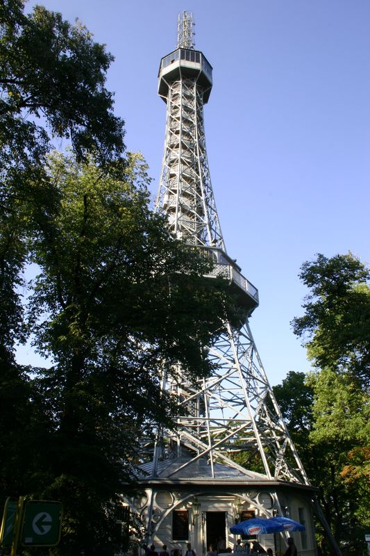
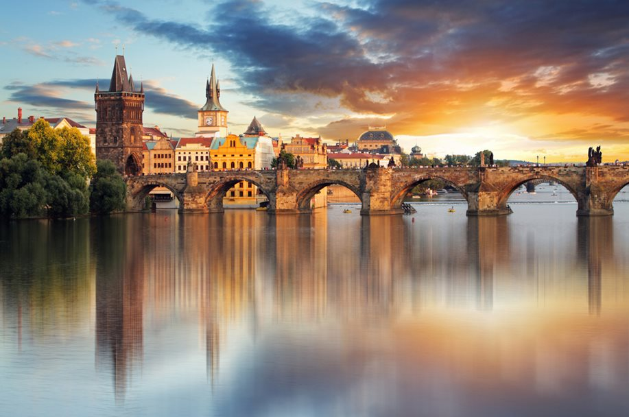
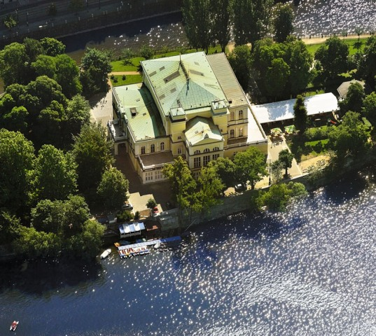
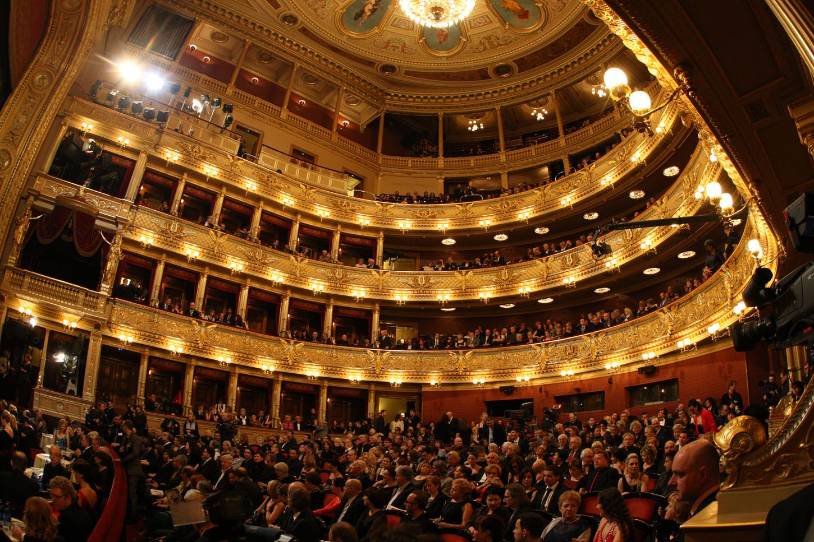
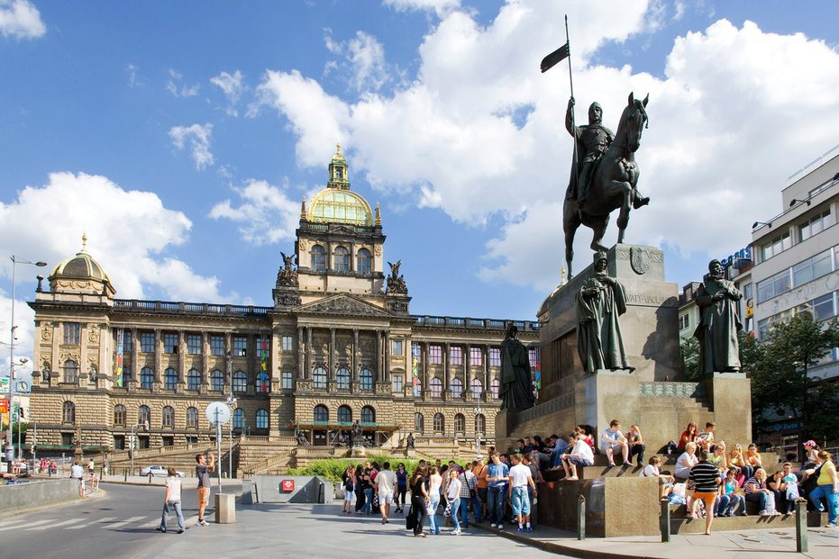

Památky
V průběhu historie byla Praha formována mnoha uměleckými směry a vzniklo mnoho památek, které můžeme vidět i dnes. Příkladem může být Pražský hrad spolu s katedrálou sv. Víta, jež stojí již několik století a vždy byl rezidencí panovníků od časů předkřesťanských až dodnes. Na Malé Straně a Starém městě si můžeme povšimnout barokních fasád a gotických domů, paláců s přepychovými zahradami, ale i chrámů a kostelů, které již několik lidských generací uchovávají umělecké i duchovní poklady minulosti. Oba břehy řeky Vltavy spojoval až do 14. století kamenný Juditin most, jenž byl ale stržen povodní a nahrazen dnes známým Karlovým mostem, který nechal vybudovat císař Karel IV. Tento panovník se také zasloužil o postavení Nového Města (rok 1348) a tím se rozloha tehdejší Prahy zvětšila o další část a dosahovala až k Vyšehradu. Ten jako městská pevnost sloužil od 11. až do 19. století. Prahou proběhlo mnoho uměleckých směrů, ať už to byla originální podoba gotiky (předjímající pozdní gotiku a více než sto let), či nejstarší reformace v Evropě, která přišla také se stoletým předstihem. S Rudolfem II. jeho umělci přišlo období pozdního manýrismu. Za zmínku také stojí barokní a secesní umění. S příchodem 20. století se objevila kubistická architektura, surrealismus a funkcionalismus. Od 90. let minulého století začíná Prahu zdobit postmoderní umění a jeho díla a stavby.
Strahovský klášter
Strahovský klášter se nachází jižně od Hradčan. Jedná se o klášter premonstrátů založený v polovině 12. století. V průběhu času byl několikrát přestavován a doplňován o nové prvky. Nejlépe je zde vidět baroko, ale je zde možno spatřit i rudolfínský kostel sv. Rocha a počátku 17. století nebo románské zdi klášterních budov. To vše naznačuje různorodý stavební vývoj tohoto areálu. Budovy kláštera neslouží jen premonstrátům, ale i Památníku národního písemnictví a Strahovské obrazárně s bohatou sbírkou obrazů. Zajímavá je zdejší knihovna, jež obsahuje na 130 000 knih, 2 500 rukopisů (nejstarší pochází z 9. století) a okolo 1 500 prvotisků. Teologický a Filozofický sál obsahují původní barokní výzdobu a knihovní skříně.

Petřín
Petřínské sady jsou pozůstatkem původní obory, která se zde nacházela až do 12. století, kdy ji nahradily vinice a zahrady. V současné době se po Petříně vine dvoukilometrová vyhlídková trasa, která turistu seznámí se zdejšími zajímavostmi. Mezi nejznámější se řadí Petřínská rozhledna s výškou 60 metrů, která je napodobeninou Eiffelovy věže z Paříže, dále pak zrcadlové Bludiště, které vzniklo u příležitosti Jubilejní výstavy (1891) stejně jako rozhledna. Na Petříně můžeme nalézt také lanovou dráhu či desítku soch a sousoší.
Karlův most
Od roku 1169 měla Praha svůj kamenný most – Juditin most, pojmenovaný podle manželky krále Vladislava I. Stál přibližně v místech, kde dnes stojí Karlův most, ale měl více oblouků a byl nižší a delší. Juditin most byl stržen povodní v roce 1342, a tak dal král a císař Karel IV. postavit roku 1357 nový kamenný most, který dnes nese název Karlův most. Jeho konstrukci vyprojektoval Petr Parléř. Most je široký 10 metrů, dlouhý 520 metrů a nese ho 16 oblouků. Pilíře mostu jsou podstavcem pro sochařské výzdoby, zejména ty barokní. Nyní most zdobí 28 skulptur. Nejstarší sochou Karlova mostu, jež se dochovala, je socha svatého Jana Nepomuckého od sochaře Jana Brokoffa z roku 1683. Stojí na místě, kde bylo tělo Jana Nepomuckého shozeno do Vltavy. Na staroměstském břehu most končí Staroměstskou mosteckou věží. Z pohledu ze břehu je patrná bohatá sochařská výzdoba z 80. let 14. století. Sochy zobrazují trůnícího Karla IV. a jeho syna Václava IV.
Vltava a ostrovy
V Praze na Vltavě vzniklo celkem 8 ostrovů. Nejznámějším je Kampa, který je stejně jako Malá Strana plný paláců, parků a zahrad. Centrem společenského života je Slovanský ostrov (původně se jmenoval Barvířský, poté až do roku 1918 Žofín). Konají se zde v restauraci po mnohá desetiletí koncerty a bály. Vystupovali zde například F. Liszt, H. Berlioz nebo i Petr Iljič Čajkovský. Vltava je splavná, můžete se zde projet na turistických parnících nebo si půjčit pramici. Průměrná hloubka se pohybuje okolo 2,5 metru.
Národní divadlo
Nové Město bylo založeno Karlem IV. roku 1348 a můžeme najít mnoho památek. Známé je například Národní divadlo, které je dominantou Pražské třídy a bylo postaveno z darů jak mecenášů, tak prostého lidu. O výzdobu se postarali sochař J. V. Myslbek, malíři Mikoláš Aleš, Václav Brožík nebo V. Hynajs. Národní divadlo bylo poprvé otevřeno roku 1881, poté bylo zničeno požárem a znovuotevřeno roku 1883.
Václavské náměstí
Václavské náměstí bylo až do roku 1848 nazýváno Koňský trh a od druhé poloviny 19. století se stalo hlavním centrem moderní Prahy. Jedná se o největší náměstí v Praze s rozlohou 42 400 m2. Domy a paláce Václavského náměstí jsou důkazem měnící se architektury. Jeho hlavní dominantou je ale budova Národního muzea. Na prostranství před muzeem byl v letech 1912 – 1924 postaven jezdecký pomník svatého Václava od sochaře J. V. Myslbeka.
Národní muzeum
Národní muzeum bylo postaveno mezi lety 1885 – 1890 Josefem Schulzem a sochařskou výzdobu zajistil Antonín Wagner. Tato novorenesanční stavba měla být centrem české vědy. Interiéry obsahují jak bohaté sbírky, tak i Pantheon – síň, která je věnovaná památce mimořádných osobností naší země.
